Adirondack NTF -
Schooling at the kennels Chrissie's opened up some new trails out
at
the kennels so I thought I'd trailer the
boys over
and give them a play date. I rode in the
Isabel
this time and didn't get any of the butterflies
like
last time. We had wonderful weather and
the horses seemed to enjoy themselves.
click
here for pics of Thistle out schooling
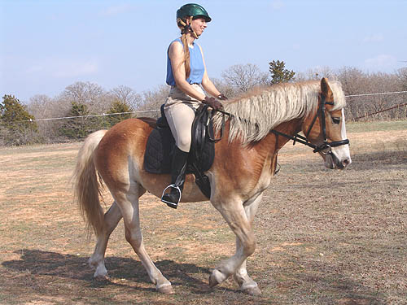
Warming up around the kennels. Adiron
is never going to have the walk of my other guys, but when we start out
I try to get some reach out of him.
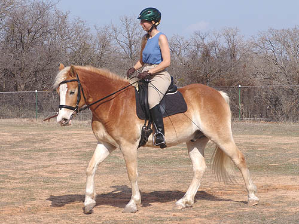
He's been better with the bit, so
the flash is off for now.
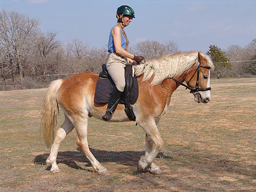
Of course we still have discussions
about moving off the leg when I ask and then the mouth might come open
again.
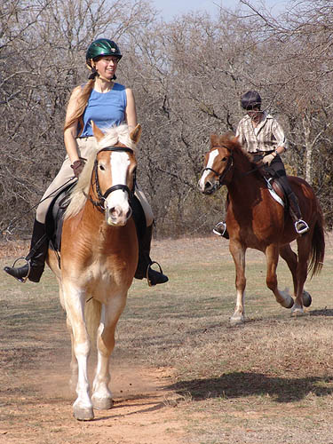
We played follow the leader. Here
Adiron was in the lead.
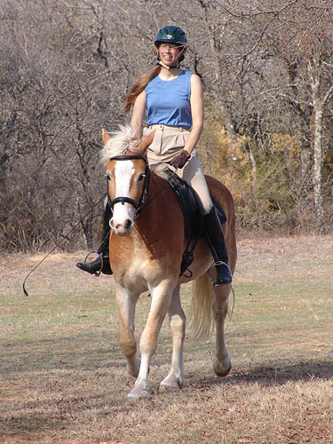
Nice, relaxed trot work. I sort of
wish he'd be more forward, but starting out in a slower trot doesn't hurt
my confidence any.
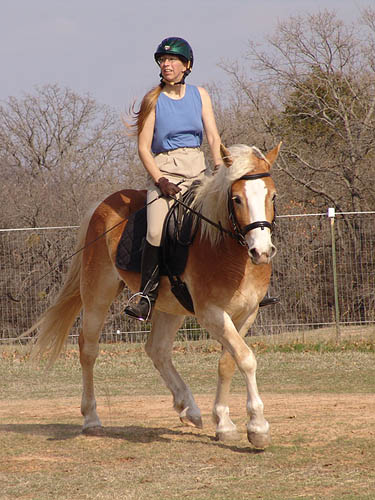
We did figure eights changing the
bend. I'd love to get him to a dressage show to see if our work pays in
the ring.
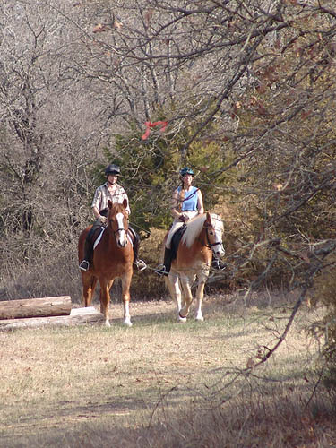
Heading out on to the trails.
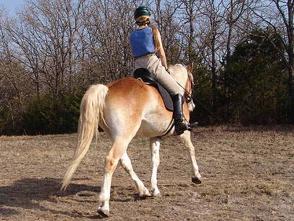
Well, at least his toes look good,
even if mine don't.
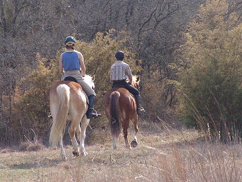
Following Thistle into the woods.
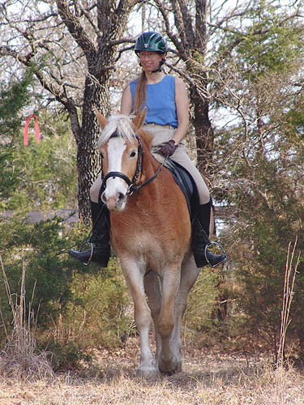
He's great through the trees and creek
area. Careful and listening to fit my legs through the narrow gaps in the
trees.
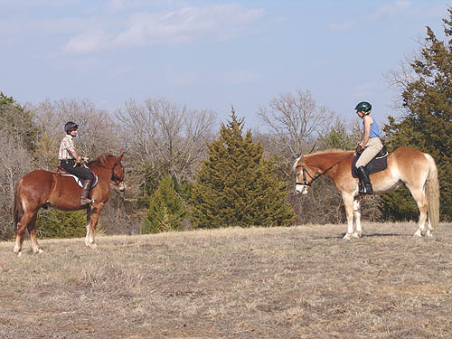
Standing and talking is good practice
for out hunting (well, not the talking part). Adiron tends to be better
at it than Thistle.
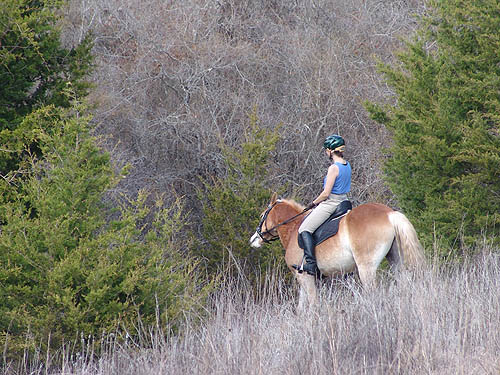
Heading down to the creek and having
a little discussion. Thistle got a bit plungy going down, Adiron thought
it would be fun to do the same. Nope, not how a nice pony goes down the
hill.
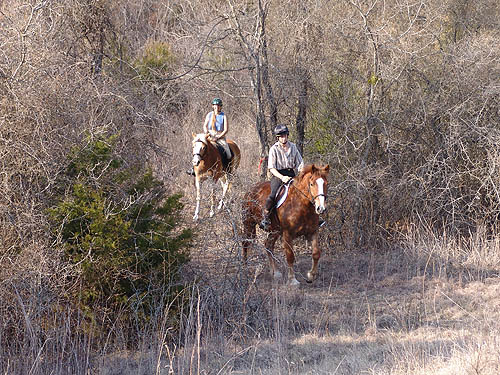
No question at the creek crossing.
Of course Thistle was getting a bit bored with all the walking.
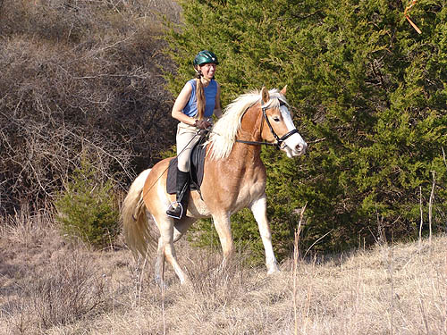
I did let Adiron pick up a trot coming
up the hill. The bounce made it just a little easier to do the climb.
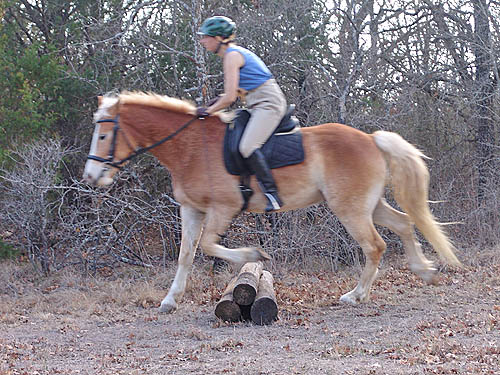
Trotting some logs. He's decided after
jumping the other weekend, that most of the stuff is just too small for
him to bother with jumping.
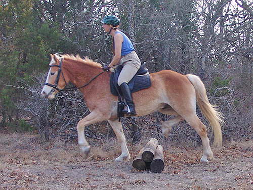
But, he's not being lazy and he's
certainly picking those feet up.
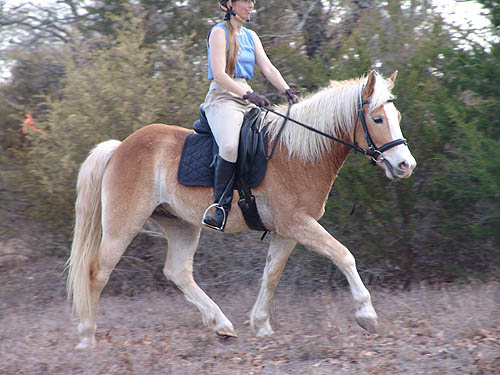
A bit of 'jumping' brought out the
forward eager trot. Now I just need to learn to ask for and get it for
the dressage ring.
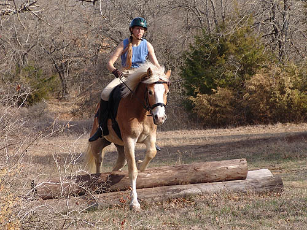
Even taking the bigger stuff in a
trot stride. I did get the canter afterwards, at least.
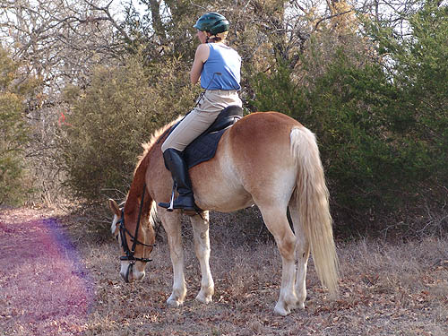
Considering the grass and watching
Thistle go over the jumps.
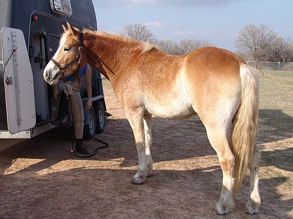
So grown up now. He doesn't look like
a youngster anymore.
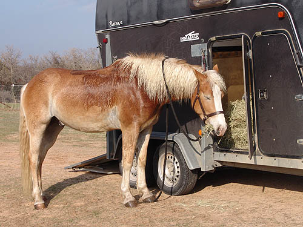
Falling asleep while eating. I hung
around after riding and the boys just fell asleep in the sun waiting for
me.